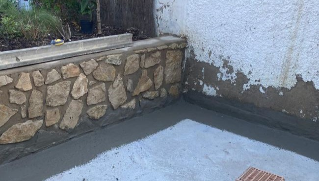
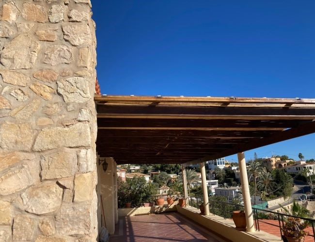
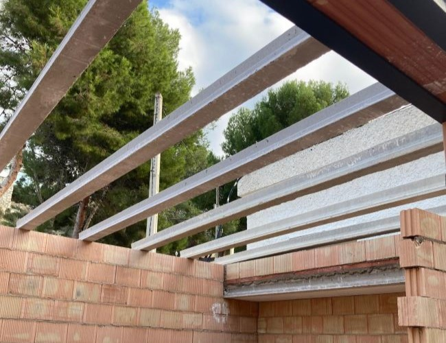
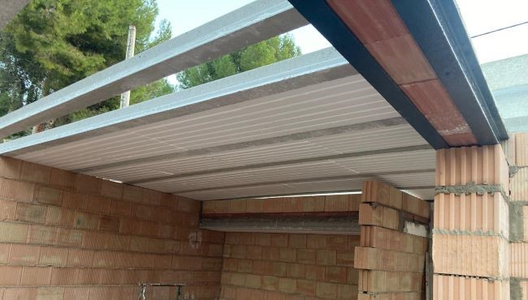
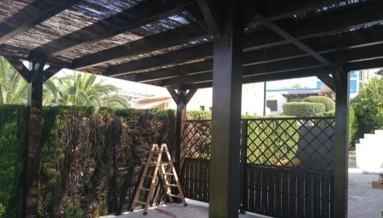
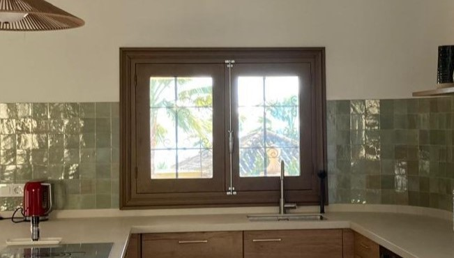
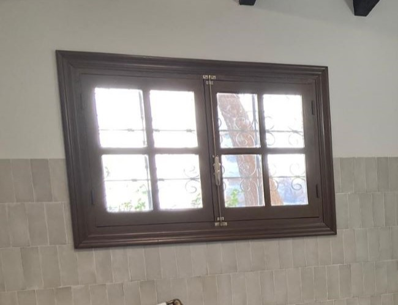

Exteriores
Cuidamos cada detalle en los espacios exteriores para que sean funcionales,
seguros y visualmente atractivos. Ofrecemos una amplia variedad de servicios que abarcan desde
la construcción de porches y escaleras hasta la instalación de tejados, ventanas o trabajos de
mampostería. Trabajamos con materiales resistentes y técnicas profesionales para garantizar
durabilidad y un acabado de calidad. Ya sea una reforma parcial o un proyecto completo, nos
adaptamos a tus necesidades para transformar el exterior de tu hogar o edificio.
Mampostería
Realizamos trabajos de mampostería exterior resistentes
y estéticamente integrados con el entorno. Utilizamos materiales de calidad y
técnicas tradicionales o modernas, según el proyecto, para construir muros,
cerramientos o elementos decorativos duraderos y con un acabado impecable.


Tejados

Ofrecemos instalación, reparación y mantenimiento de tejados,
adaptándonos a todo tipo de cubiertas. Trabajamos con tejas, paneles y sistemas
impermeables de alta calidad para garantizar protección, aislamiento y durabilidad
frente a las inclemencias del tiempo.

Porches

Construimos porches a medida que aportan confort y estilo a tu
vivienda. Diseñamos estructuras resistentes y personalizadas, ideales para crear
zonas de sombra o descanso, siempre con materiales duraderos y acabados de alta
calidad.

Ventanas
Instalamos y renovamos ventanas con soluciones eficientes y
estéticas. Ofrecemos una amplia variedad de materiales y estilos, garantizando un
excelente aislamiento térmico y acústico, además de una instalación profesional,
limpia y precisa.

